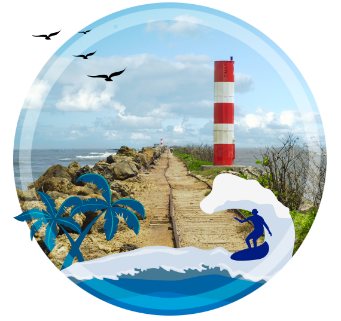
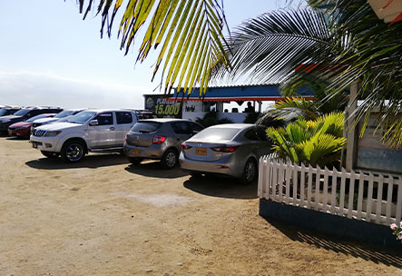
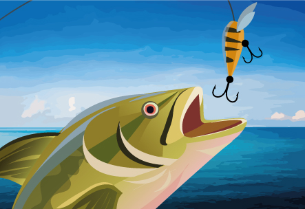

Restaurante Marino
Estamos listos! Para que disfrutes de nuestra hermosa vista y la mejor comida de mar.
Bocas de cenizas
Rumbo a la Kz la preferida
En 1907 se asignan los primeros estudios para encauzar el río y provocar la ruptura de la barra a los ingenieros norteamericanos Ripley y Haupt. Los complementa en 1915 la firma alemana Julius Berger. Después de la primera Guerra Mundial, el próspero comercio local constituye la Sociedad Colombiana de Bocas de Ceniza (1919) y contrata con el gobierno colombiano la adecuación de la desembocadura. La base serían los estudios de la Berger. La obsesión de Barranquilla es convertir su acceso al mar en propósito nacional.

Productos
Contamos con un menu variado de pescados y mariscos.

Parqueadero
Parqueadero exclusivo y seguro para nuestros clientes.
Medios de pago
Aceptamos efectivo y todas las tarjetas de credito y debito.

Venta de pescado
Proximamente venta de pescado fresco y de la mejor calidad.
Paseos en lancha
Proximamente paseos en lancha en el mar caribe.
Como llegar
Conoce como llegar a la Kz la Preferida.